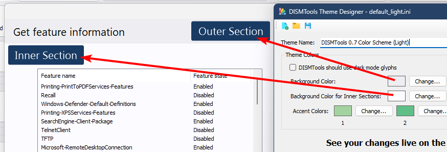

The DISMTools Theme Designer
The DISMTools Theme Designer is a tool that allows you to create and edit themes for DISMTools. It can be accessed from one of the following locations:
- By going to Tools > Options > Personalization and clicking "Design your themes"
- Independently, by opening
DT_ThemeDesigner.exelocated in<program directory>\tools\ThemeDesigner
You should see the following window:

Usage
When you launch the Theme Designer, you will be about to create a new theme. Use the icons on the toolbar to create, open, and save themes.
It is time to start specifying the theme properties. First, come up with a cool name. For example, "The Color of Passion" if you want to use a red color scheme, or "Sure as heck Golden" if you primarily intend to use gold colors. Then, specify the colors, which are divided into the following categories:
-
Background colors for outer and inner sections. These colors are used, for example, here:

-
Foreground color
- Accent colors. The current implementation of the Theme engine uses 4 accent colors that can be used by the program in diverse areas
If you are working on a dark theme, it is recommended that you check DISMTools should use dark mode glyphs to make icons and other glyphs visible.
To change the colors, click the "Change" button next to the color previews. Then, pick a color. You will see a live preview of how your theme will look like. If you are satisfied with the result, click "Save" to save the theme.
Installing the theme
To add the theme to DISMTools, simply add it to <program directory>\bin\themes and relaunch the program. Then, go back to the personalization settings and you'll see the theme in the list of themes. Depending on whether you created a dark or light theme, you can select it as the default theme and it will be applied when you change the color mode; like this:

Enjoy your new theme!

NOTE: themes you create will not work on DISMTools 0.6.2 and older due to the absence of the theme engine.
Running on older versions of Windows
DISMTools includes 2 versions of the Theme Designer that contain the same feature set but target different frameworks:
- The main version targets .NET 4.8 and works on Windows 7 SP1 and later (except Windows 10 1507/1511). The source code of this version is available on the GitHub repository
-
An alternative version targets .NET 2 and works on operating systems as old as Windows 98 Second Edition. The source code of this version is available as a ZIP file in the repository

The Theme Format
Themes are stored in simple INI files, which you can open with any text editor. The format is as follows:
[Theme Information]
; The name of the theme
Name="Example Theme"
[Theme Colors]
; Determines whether the theme uses dark or light mode glyphs
IsDark=0 ; 1 for dark mode, 0 for light mode
; The background color for the outer section
BackgroundColor="#abcdef"
; The background color for the inner section
SectionBackgroundColor="#abcdef"
; The foreground color
ForegroundColor="#000000"
; The accent colors
AccentColor1="#143A10"
AccentColor2="#246B1C"
AccentColor3="#057F1A"
AccentColor4="#005522"
NOTE: on Windows 9X systems, you will see some artifacts when opening the theme files in a text editor. This is because theme files are encoded in UTF-8, which Windows 9X does not support, as it only provides ASCII support by default. On Windows NT platforms you will not see these issues.
Color values are stored as hex values composed of red, green, and blue components. Alpha channel support is not implemented because adding transparency to surfaces is not necessary.
For items that are disabled, the theme engine calculates a color based on the foreground color, using the following procedure:
-
The multiplication factor is determined based on whether the foreground color is light or dark. The formula to determine whether a color is light or dark is:
- If it's greater than or equal to 128 (light color), the multiplication factor becomes 0.7 and the inactive color value is calculated by multiplying the foreground color's red component by 0.7
- If it's less than 128 (dark color), the multiplication factor becomes 1.3 and the inactive color value is calculated by determining if the foreground color's red component plus 133 is less than or equal to 255, and using that value if it is, or 255 otherwise. This prevents integer overflow
-
Once the inactive color value is determined, a new color is created using the foreground color's alpha channel and the inactive color value for the red, green, and blue components
The theme engine parses the theme file to create a theme object, in which each of the properties is stored.
Themes do not persist during updates, so you'll have to back them up and add them again after the update. If DISMTools can't find any themes, it will use the default color set defined internally. The theme format may also change in the future, so you may need to adapt your themes to the new format. DISMTools won't support themes using older versions of the theme format.
Format Version History
| Version | Used by DISMTools versions | Notes |
|---|---|---|
| 1.0 | 0.7 | Initial version |
Use this table to keep track of theme format changes.